PR03. Operación narcos: expediente Kowhai.
Introducción.
Una operación internacional de inteligencia alertó a las autoridades de Nueva Zelanda sobre el posible ingreso de sustancias ilícitas a su territorio. Como resultado, dos pasajeros procedentes de Australia, identificados como John Fredricksen y Jane Esteban, fueron interceptados por agentes aduanales en el aeropuerto de Wellington.
Durante la inspección del equipaje se descubrió un kilogramo de metanfetamina oculto en una maleta. Tras el aseguramiento de los pasajeros, las autoridades obtuvieron información sobre dos posibles lugares de entrega: la biblioteca de Eastbourne y un inmueble ubicado en Petone.
La intervención policial en este último domicilio permitió localizar sustancias ilícitas, armas de fuego y una computadora de escritorio. El inmueble se encuentra relacionado con Steve Kowhai, un individuo bajo investigación por su posible participación en actividades de distribución de drogas.
Los investigadores consideran que el dispositivo podría contener información sobre comunicaciones entre los involucrados, desplazamientos, archivos relacionados con las operaciones y mecanismos empleados para ocultar información.
Actividad
Formas parte de una unidad especializada de investigación forense digital. Las autoridades han puesto a tu disposición una imagen forense del equipo relacionado con Steve Kowhai, identificada como Narcos-1.
Tu responsabilidad consiste en examinar la evidencia digital para identificar información relevante, reconstruir acontecimientos y determinar qué indicios permiten establecer posibles vínculos entre el dispositivo analizado y los hechos investigados.
El objetivo central de la investigación será determinar qué actividades pueden demostrarse a partir del disco.
Parte I. Extracción e identificación de evidencia digital
Descarga Narcos-1.zip, conserva el archivo original y verifica su integridad. Usa FTK Imager, Autopsy u otra herramienta compatible. Para cada respuesta registra el valor exacto, la ruta dentro de la imagen, la herramienta o procedimiento y una captura o salida comprobable.
Se utilizará la herramienta Auptosy debido a su gran versatilidad opciones de búsqueda y agrupación de información importante.
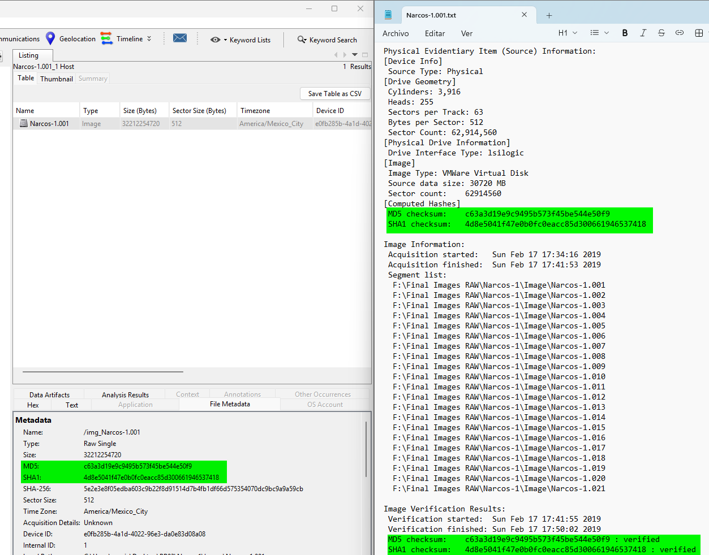
Al cargar la imagen con Autopsy este analiza y nos indica su MD5 y SHA1 son idénticos al archivo
de texto dentro de la descarga.
MD5: c63a3d19e9c9495b573f45be544e50f9
SHA1: 4d8e5041f47e0b0fc0eacc85d300661946537418
Sistema operativo y navegación
¿Qué edición y versión de Windows se encuentran instaladas en el equipo? Indica el artefacto donde se obtiene la información.
Windows 10 Pro, se encuentra en Data Artifacts -> Operating System Information.
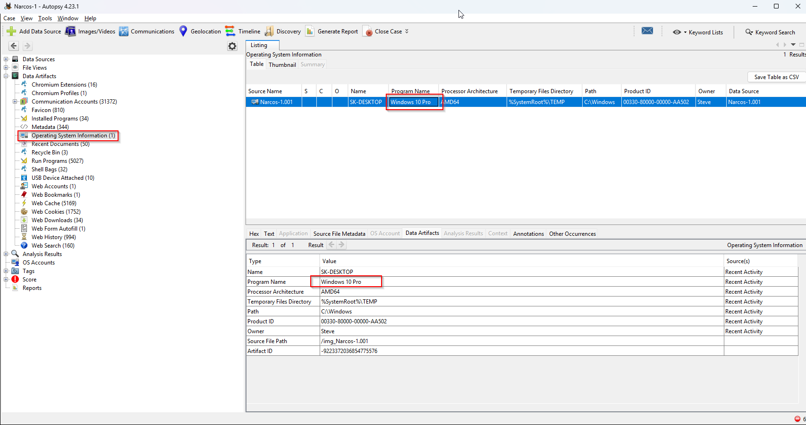
¿Cuál es el nombre de la carpeta del perfil principal y cuál es su ruta absoluta?
Steve
C:\Users\Steve (Ruta Windows)
/img_Narcos-1.001/vol_vol7/Users/Steve (Ruta Autopsy)
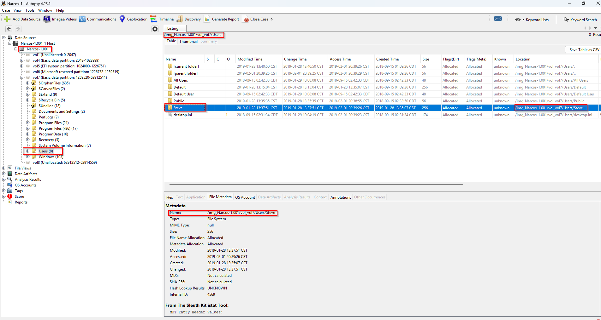
Dentro de OS Accounts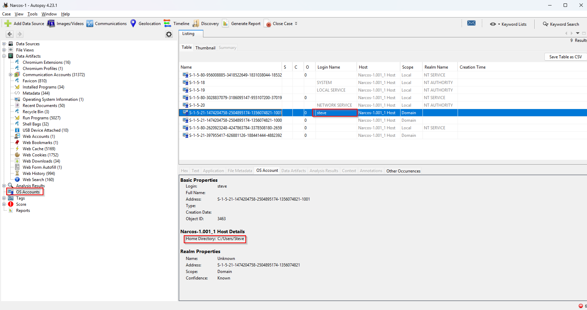
¿Cuál es la ruta de la clave UserAssist que registra actividad de programas en el perfil principal?
C:\Users\ Steve \NTUSER.DAT (Ruta Windows)
/img_Narcos-1.001/vol_vol7/Users/Steve/NTUSER.DAT (Ruta Autopsy) Software\Microsoft\Windows\CurrentVersion\Explorer\UserAssist\ (Ruta dentro del archivo NTUSER.DAT)
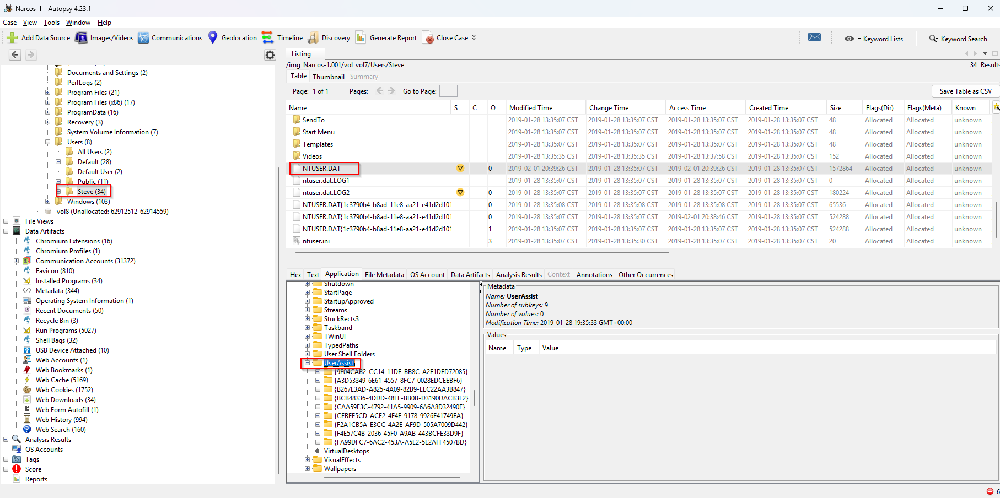
¿Qué dos navegadores presentan artefactos de actividad? Identifica el archivo o base de datos del historial de cada uno.
Data Artifacts -> Run Programs
Google Chrome -> /img_Narcos- 1.001/vol_vol7/Users/Steve/AppData/Local/Google/Chrome/User Data/Default/History
Microsoft Edge -> /img_Narcos- 1.001/vol_vol7/Users/Steve/AppData/Local/Packages/Microsoft.MicrosoftEdge_8wek zyb3d8bbwe/AC/MicrosoftEdge/History
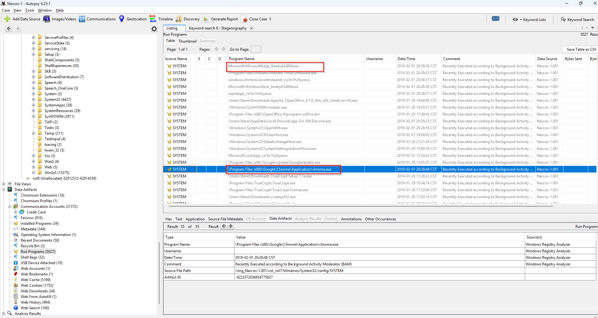
¿Cuál es el hash MD5 del archivo History del perfil predeterminado de Chrome?
f3f979c6dee9fbb7cbdf5818aaa4b723
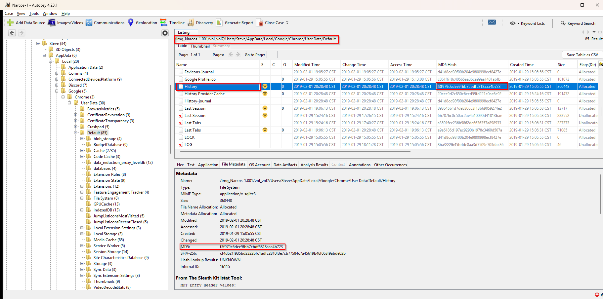
Documentos, imágenes y metadatos
¿Cuál es la ruta absoluta del archivo airport crystals.jpg?
C:\User\Steve\Documents\Misc\airport crystals.jpg (Ruta Windows).
/img_Narcos-1.001/vol_vol7/Users/Steve/Documents/Misc/airport crystals.jpg (Ruta Auptopsy).
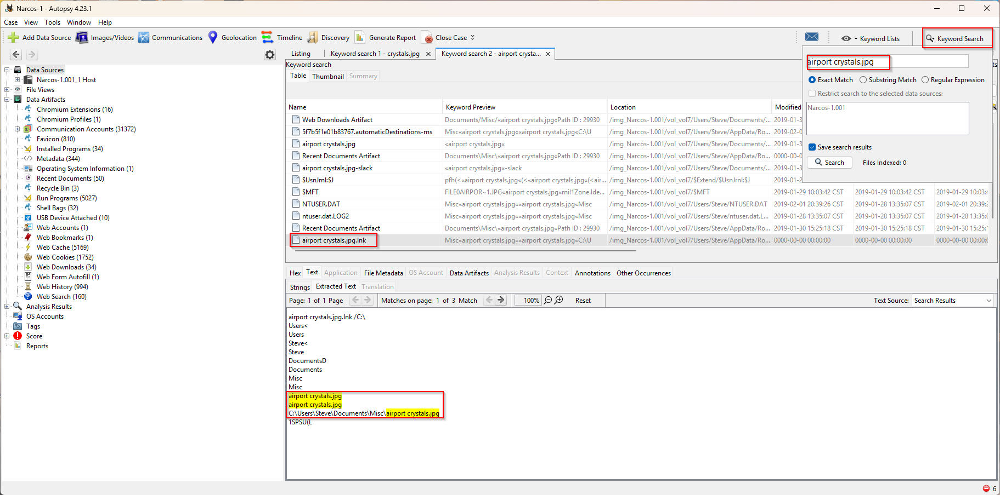
¿Cuál es la fecha y hora de creación de airport crystals.jpg (NZDT)?
31-01-2019 10:25:18 NZDT
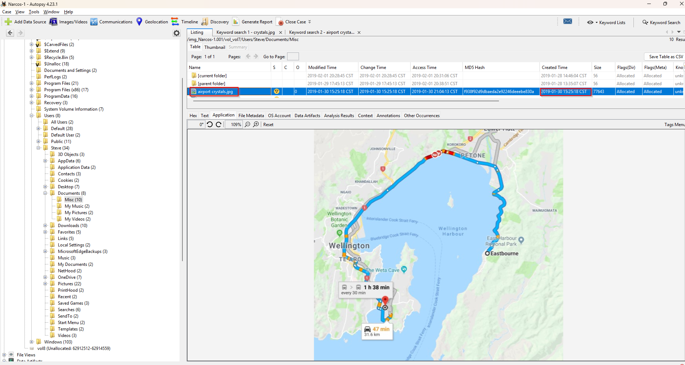
¿Cuál es el hash MD5 completo de dropoff.jpg?
7feb763bebe42c3a3464c9ee3bb1d3e8
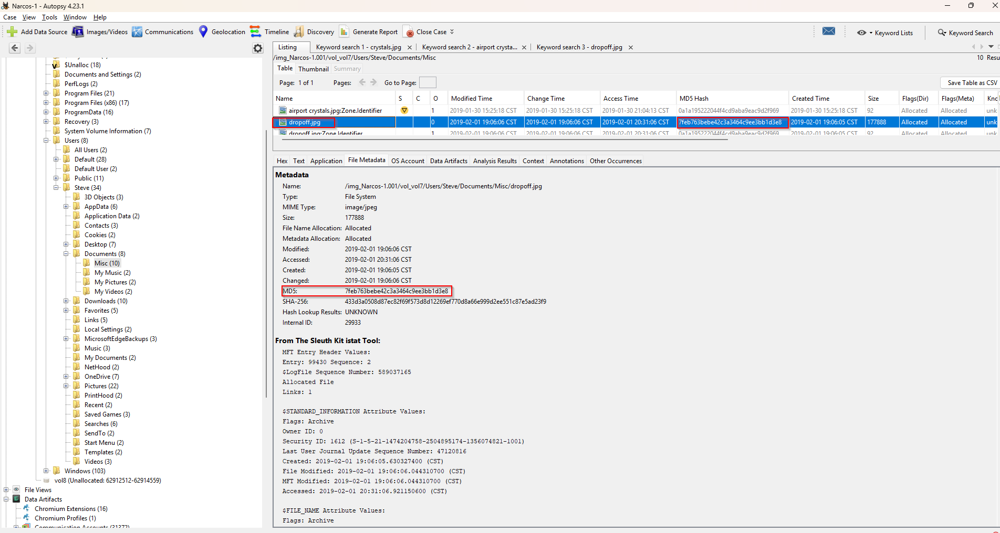
¿Cuál es la fecha y hora de última modificación de dropoff.jpg (NZDT)?
02-02-2019 14:06:06 NZDT
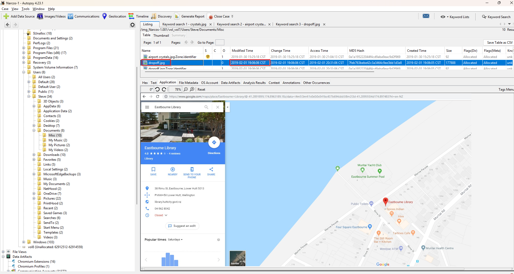
¿Cuál es el nombre exacto y la ruta del archivo de imagen relacionado con reservaciones de vuelo en Documents\Misc?
flightbookings.PNG
C:\User\Steve\Documents\Misc\flightbookings.PNG (Ruta Windows).
/img_Narcos-1.001/vol_vol7/Users/Steve/Documents/Misc/flightbookings.PNG (Ruta Auptopsy).
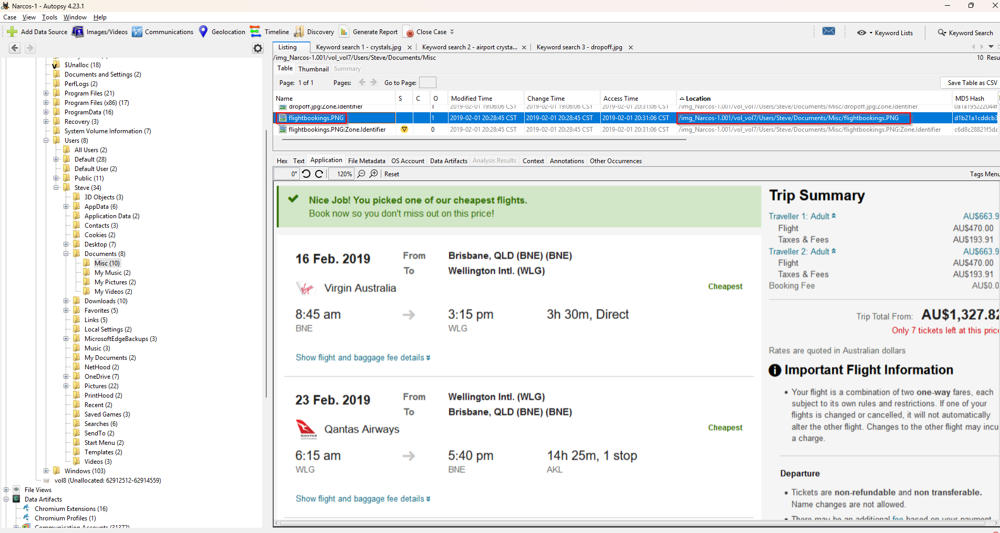
¿Cuál es el hash MD5 del archivo Method run.jpg?
69b225bc0ef5a0c003f1e2a6646aaf92
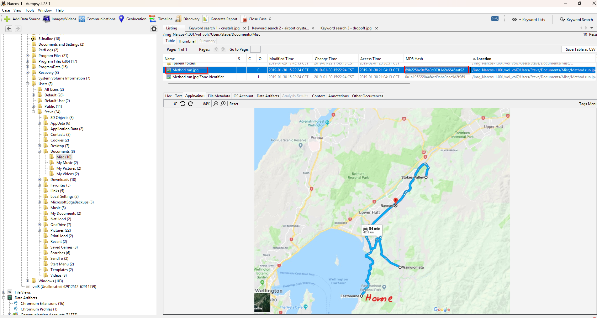
Programas y otros artefactos
¿Cuál es el hash MD5 completo de BNE.png?
dffa98bdd7371d1806adb09db27ba283
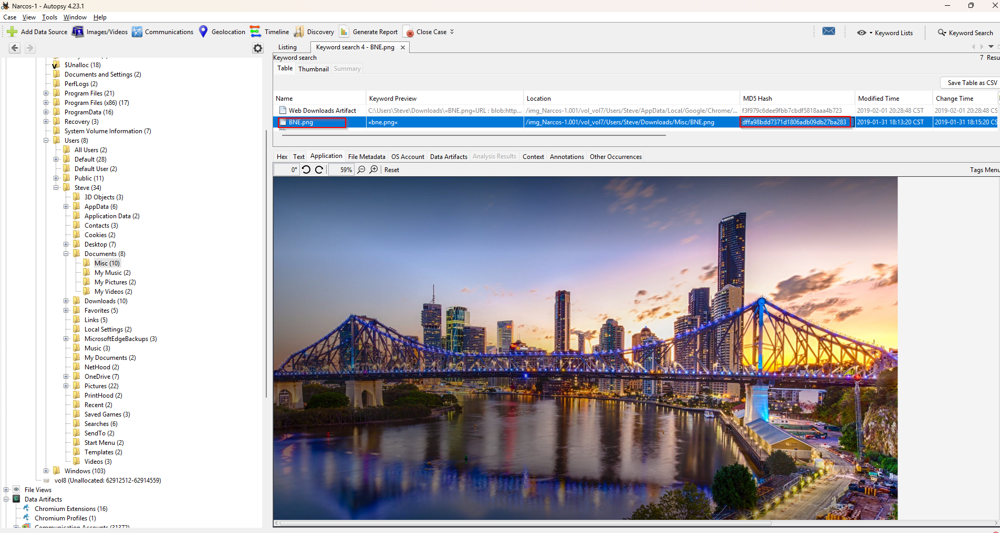
¿Cuál es el nombre, ruta y MD5 del instalador de una herramienta de esteganografía en Downloads?
Image Steganography 1.5.2 Setup.exe
C:\Users\Steve\Downloads\Image Steganography 1.5.2 Setup.exe (Ruta Windows).
/img_Narcos-1.001/vol_vol7/Users/Steve/Downloads/Image Steganography 1.5.2 Setup.exe (Ruta Auptopsy).
MD5: c9b7c382dea6d7f45ae1bf437860cb69
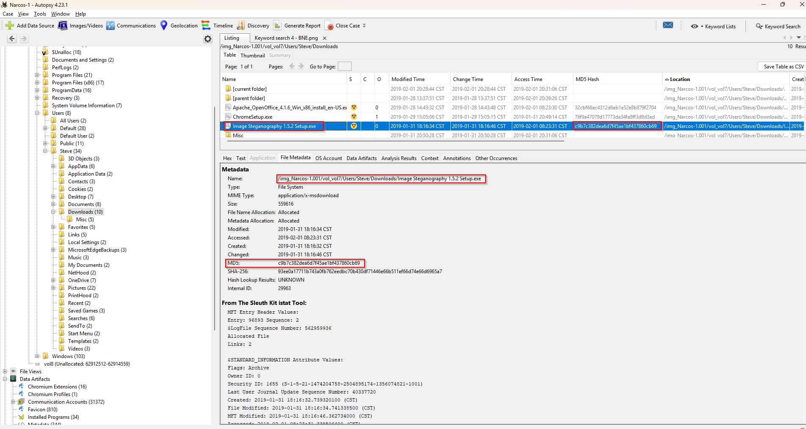
¿Cuál es el nombre y la ruta del instalador de una herramienta de cifrado encontrado en Downloads?
TrueCrypt Setup 7.1a.exe
/img_Narcos-1.001/vol_vol7/Users/Steve/Downloads/TrueCrypt Setup 7.1a.exe (Ruta Auptopsy).
C:\Users\Steve\Downloads\ TrueCrypt Setup 7.1a.exe (Ruta Windows).
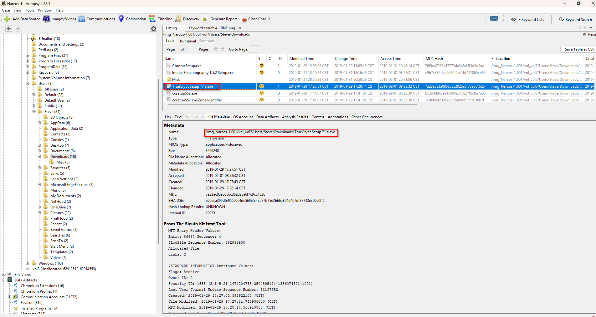
¿Cuáles son las rutas de la caché de Discord y de ActivitiesCache.db utilizada por Windows Timeline?
Discord cache C:\Users\yamie\AppData\Roaming\Discord\Cache (Ruta Windows). /img_Narcos-1.001/vol_vol7/Users/Steve/AppData/Roaming/Discord/Cache (Ruta Auptopsy). C:\Users\yamie\AppData\Roaming\Discord\GPUCache (Ruta Windows). /img_Narcos- 1.001/vol_vol7/Users/Steve/AppData/Roaming/Discord/GPUCache (Ruta Auptopsy). ActivitiesCache.db C:\Users\yamie\AppData\ Local\ConnectedDevicesPlatform\2418c0082017486a\ActivitiesCache.db (Ruta Windows). /img_Narcos- 1.001/vol_vol7/Users/Steve/AppData/Local/ConnectedDevicesPlatform/2418c0 082017486a/ActivitiesCache.db (Ruta Auptopsy).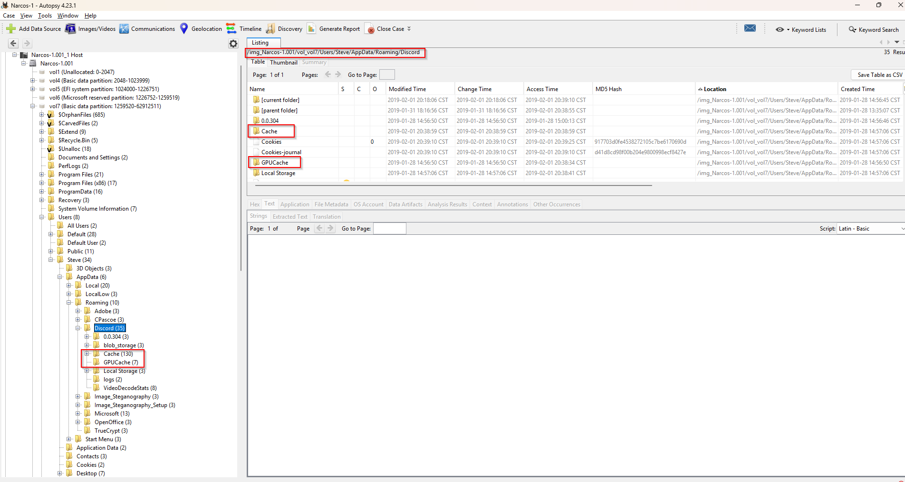
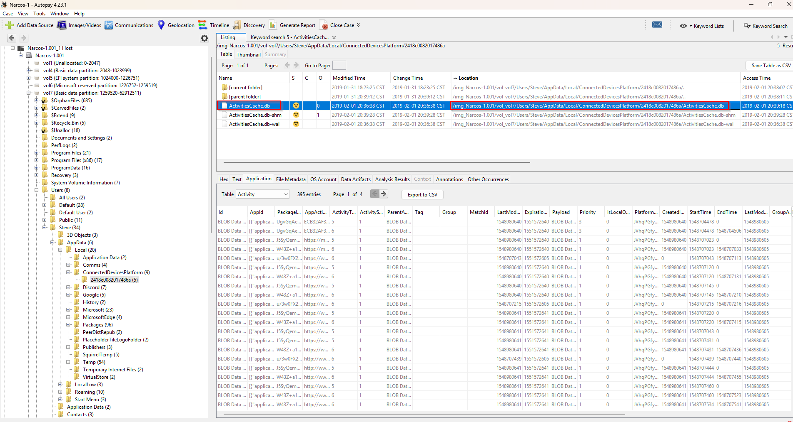
Parte II. Investigación, interpretación y análisis del caso
En esta segunda parte no bastará identificar archivos. Fundamenta cada respuesta en indicios localizados en Narcos-1. Señala expresamente lo observado, la interpretación que propones y aquello que no puede confirmarse con la evidencia disponible. Registra fechas con zona horaria y evita afirmar que una descarga equivale a una ejecución.
Examina flightbookings, BNE.png y dropoff.jpg. ¿Qué coincidencias sobre lugares, desplazamientos o logística identificas?
Contrasta airport crystals.jpg y Method run.jpg con un registro de actividad del equipo. ¿Qué interpretación sobre su finalidad puede sostenerse?
¿Qué evidencia permite afirmar que Discord estuvo presente o fue utilizado en el equipo? ¿Qué no puede concluirse sobre conversaciones, interlocutores o autoría sin recuperar mensajes verificables?
Analiza los indicios de herramientas de esteganografía y cifrado. Diferencia descarga, instalación, ejecución y uso efectivo; explica qué artefactos respaldan cada nivel.
Formula una hipótesis sobre la relación del equipo con los hechos investigados y una explicación alternativa. Sustenta el análisis con cuatro hallazgos y señala dos evidencias adicionales necesarias.